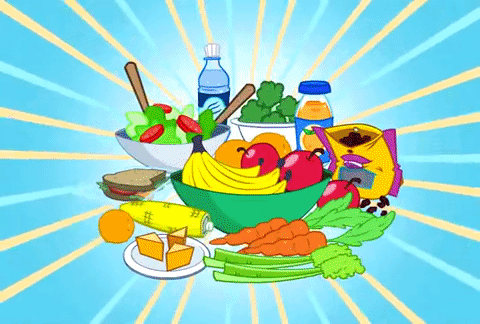

Homepage
 How can food affect mood?
How can food affect mood?
Knowing what foods we should and shouldn't be eating can be really confusing, especially when it feels like
the
advice changes regularly. However, evidence suggests that as well as affecting our physical health, what we
eat
may also affect the way we feel.
Improving your diet may help to:
- improve your mood
- give you more energy
- help you think more clearly

How to manage your mood and food
Tips to help you explore the relationship between what you eat and how you feel:
- Eating regularly
- If your blood sugar drops you might feel tired, irritable and depressed. Eating regularly and choosing
foods that release energy slowly will help to keep your sugar levels steady.Slow-release energy foods
include: pasta, rice, oats, wholegrain bread and cereals, nuts and seeds.

- Quick tips:
- Eating breakfast gets the day off to a good start.
- Instead of eating a large lunch and dinner, try eating smaller portions spaced out more
regularly throughout the day.
- Avoid foods which make your blood sugar rise and fall rapidly, such as sweets, biscuits,
sugary drinks, and alcohol.
- Staying hydrated
- If you don't drink enough fluid, you may find it difficult to concentrate or think clearly. You might
also
start to feel constipated (which puts no one in a good mood).

- Quick tips:
- It's recommended that you drink between 6 or 8 glasses of fluid a day.
- Water is a cheap and healthy option.
- Tea, coffee, juices and smoothies all count towards your intake (but be aware that these
may
also contain caffeine or sugar).
- Getting your 5 a day
- Vegetables and fruit contain a lot of the minerals, vitamins and fibre we need to keep us physically and
mentally healthy.Eating a variety of different coloured fruits and vegetables every day means you'll get
a
good range of nutrients.

- Quick tips:
- Fresh, frozen, tinned, dried and juiced (one glass) fruits and vegetables all count
towards
your 5 a day.
- As a general rule, one portion is about a handful, small bowl or a small glass.
- For ideas on how to get your 5 a day, visit NHS Choices.Looking after your gut
- Getting enough protein
- Protein contains amino acids, which make up the chemicals your brain needs to regulate your thoughts and
feelings. It also helps keep you feeling fuller for longer.
- Eating the right fats
- Your brain needs fatty acids (such as omega-3 and -6) to keep it working well. So rather than avoiding
all
fats, it's important to eat the right ones.

- Quick tips:
- Try to avoid anything which lists 'trans fats' or 'partially hydrogenated oils' in the
list
of ingredients (such as some shop-bought cakes and biscuits). They can be tempting when
you're feeling low, but this kind
of fat isn't good for your mood or your physical health in the long run.
Top